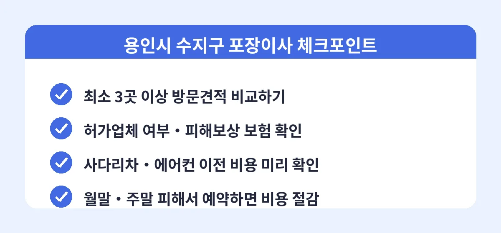

용인시 수지구는 죽전동, 풍덕천동, 동천동, 성복동까지 대단지 아파트가 이어지는 주거 중심 지역입니다. 분당과 강남 접근성이 좋아 전출입이 활발하고, 그만큼 이삿짐센터 이용 후기도 풍부하게 쌓여 있습니다. 2026년 기준으로 수지구에서 좋은 평가를 받는 업체들을 살펴보면 공통점이 뚜렷한데, 이름값보다는 실제 작업 품질과 약속 이행 여부가 순위를 가른다는 점입니다.

인터넷에 떠도는 순위는 참고 자료일 뿐, 모든 이사에 정답이 되지는 않습니다. 같은 업체라도 배정되는 팀에 따라 만족도가 달라질 수 있고, 짐 양과 이동 거리, 날짜에 따라 유리한 업체가 다르기 때문입니다. 그래서 후기가 좋은 업체 여러 곳에서 견적을 받아, 내 이사 조건에 가장 성실하게 응대하는 곳을 고르는 방식이 실패 확률이 가장 낮습니다.
비교견적 서비스를 이용하면 수지구에서 활동하는 검증된 이삿짐센터 여러 곳의 견적을 한 번의 신청으로 받아볼 수 있습니다. 업체 간 경쟁이 전제되어 있어 가격 거품이 빠지고, 후기와 조건을 함께 비교할 수 있어 처음 이사하는 분들도 어렵지 않게 좋은 업체를 고를 수 있습니다. 이사 3주 전 견적 신청이 가장 이상적인 타이밍입니다.
Q. 후기가 좋은 업체는 무조건 믿어도 되나요?
후기는 중요한 참고 자료지만, 같은 업체라도 배정 팀에 따라 편차가 있습니다. 후기와 함께 방문견적 때의 응대 태도, 견적서의 구체성, 보험 가입 여부까지 종합적으로 보고 판단하는 것이 안전합니다.
Q. 손 없는 날에 꼭 이사해야 하나요?
손 없는 날은 수요가 몰려 요금이 20~30% 비싸고 예약도 어렵습니다. 일정 조율이 가능하다면 평일 이사가 같은 서비스에 훨씬 저렴하므로, 비용을 우선한다면 굳이 고집할 필요는 없습니다.
Q. 계약금은 얼마나 걸어야 하나요?
보통 전체 금액의 10% 내외를 계약금으로 겁니다. 과도한 계약금을 요구하거나 현금 완납을 조건으로 할인하는 업체는 피하는 것이 좋고, 계약서에 취소·변경 규정이 있는지 확인하세요.